Our Distinguished Speakers
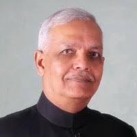
Lt. Gen. (Dr) R.S. Panwar
Former Commandant
Military College of Telecommunication Engineering
Lt. Gen. (Dr) R.S. Panwar, a distinguished alumnus of IIT Bombay, served in the Indian Army's Corps of Signals for four decades. He has commanded various formations, including an electronic warfare brigade and an armoured division signal regiment.
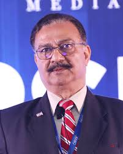
Lt. Gen. (Dr) Rajesh Pant
Former National Cyber Security Coordinator
National Security Council, India
Lt. Gen. (Dr) Rajesh Pant, with a Ph.D. in Information Security Metrics, served as the National Cyber Security Coordinator in the National Security Council of India. He has over 41 years of experience in the Indian Army's Signals Corps and has been honored thrice by the President of India for distinguished service.
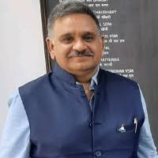
Air Vice Marshal (Dr) Devesh Vatsa
Former Commandant
Aviation Software Development Institute, Indian Air Force
Air Vice Marshal (Dr) Devesh Vatsa, VSM (Retd), is a former Commandant of the Aviation Software Development Institute of the Indian Air Force. He has also served as Assistant Chief of Staff (Communication) and is currently an advisor on Cyber Security and Critical Technologies at DSCI, NASSCOM.
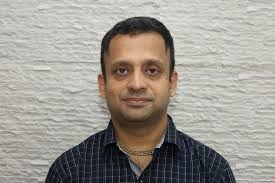
Prof. (Dr) Ganesh Ramakrishnan
Institute Chair Professor
Indian Institute of Technology Bombay
Prof. (Dr) Ganesh Ramakrishnan is an Institute Chair Professor in the Department of Computer Science and Engineering at IIT Bombay. His research interests include machine learning, natural language processing, and AI in resource-constrained environments.
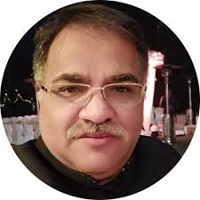
Dr. Alok Vijayant
Founder
SciRoIT Technologies
Dr. Alok Vijayant is the founder of SciRoIT Technologies, a firm specializing in innovative solutions for the digital domain. With an MBA from FMS, a CEH certification, and advanced diplomas in Cyber Security and Mandarin, Dr. Vijayant has an extensive background in cyber operations. He previously served as Director of Cyber Operations for the Government of India, where he played a pivotal role in shaping national cybersecurity strategies. At SciRoIT Technologies, he focuses on developing cutting-edge tools like INFULATOR, designed for advanced information management and operations. Dr. Vijayant is also a thought leader, contributing to various podcasts and publications on cybersecurity and hybrid warfare.
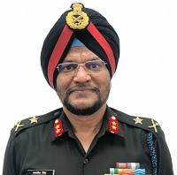
Lt Gen. (Retd.) Manjit Singh
Former National Cyber Security Coordinator
Prime Minister's Office, Government of India
Lt Gen. (Retd.) Manjit Singh served as the National Cyber Security Coordinator in the Prime Minister's Office, Government of India. With a distinguished military career spanning several decades, he has been instrumental in shaping India's cyber defense policies. As the National Cyber Security Coordinator, he oversaw the formulation and implementation of strategies to protect the nation's critical information infrastructure. Post-retirement, Lt Gen. Singh continues to contribute to the field through advisory roles and as a speaker at various cybersecurity forums, sharing his extensive knowledge on national security and cyber warfare.
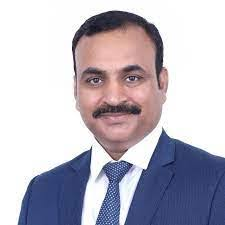
Shri Shiv Kumar Pandey
Group Chief Information Security Officer (CISO)
Adani Group
Shri Shiv Kumar Pandey, with over 23 years of leadership experience across diverse industries, serves as the Group Chief Information Security Officer (CISO) at Adani Group. He leads strategic cybersecurity initiatives, ensuring the security of both IT and OT systems.
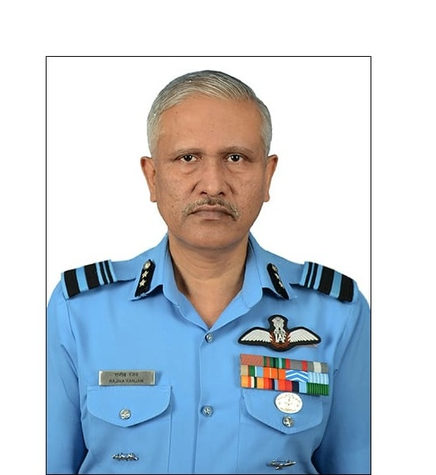
Air Vice Marshal Rajiva Ranjan VM (Retd)
Former Assistant Chief of Integrated Defence Staff (ICT)
Indian Air Force
Commissioned in 1987, AVM Rajiva Ranjan is a distinguished fighter pilot with nearly 3,850 accident-free flying hours. A Fighter Combat Leader and Qualified Flying Instructor, he served in key positions including Assistant Chief of Air Staff Operations (Space) and Air Attaché in Afghanistan. As the first Flight Commander of MiG-21 (Bison), he established its operational protocols. He is a recipient of the Vayu Sena Medal and two Chief of Air Staff Commendations for his exceptional service to the Indian Air Force.
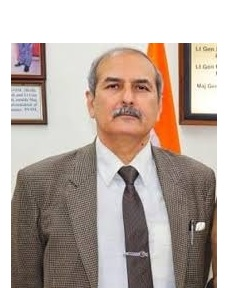
Major General (Dr) Pawan Anand
Director, Atma Nirbhar Bharat Initiative
United Service Institution of India
He is a distinguished scholar-soldier with 36 years of service in the Indian Army. He has commanded an Armoured Engineer Regiment and an Engineer Brigade in a Strike Corps. Currently, he is the Director of the Atma Nirbhar Bharat Initiative at the United Service Institution (USI) of India, focusing on the intersection of geopolitics, emerging technologies, and defense industry.
.jpg)
Maj Gen PK Mallick, VSM (Retd)
Consultant
Vivekananda International Foundation
Maj Gen PK Mallick, VSM (Retd) is a distinguished military professional with extensive experience in cyber warfare, electronic warfare, and signals intelligence. Commissioned into the Corps of Signals of the Indian Army, he holds a B.E. in Electronics and Telecommunication Engineering from B.E. College, Shibpur, and an M.Tech from IIT Kharagpur. Throughout his career, Maj Gen Mallick has held various command, staff, and instructional positions, including Senior Directing Staff (Army) at the National Defence College, New Delhi. Post-retirement, he serves as a consultant at the Vivekananda International Foundation, contributing to research on national security and strategic affairs. He is also an accomplished author, having published numerous papers on contemporary security issues.
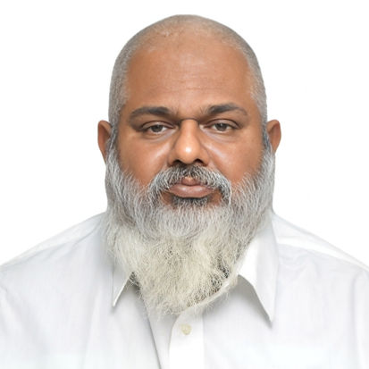
Saptarshi Basu
Mr. Saptarshi Basu is a distinguished Marine Engineer, Naval Architect, and researcher in cognitive warfare with over 25 years of experience in maritime and engineering sectors. A graduate from IMU-Kolkata campus, he holds MEO Class 1 certification, PGDNA in Naval Architecture from Mumbai University, and an MBA in Shipping Logistics Management. His expertise spans ship building, marine engineering, and strategic project management. As a certified Insurance and Quality Auditor, diving supervisor, and Chief Engineer, he has led vessel management and underwater operations. His recent accomplishments include serving as technical head for multiple shipping companies and spearheading India's first underwater salvage operation. His research in cognitive warfare has strengthened maritime security protocols and defensive strategies.
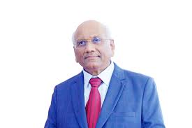
Dr. Subba Rao Pavuluri
Chairman & Managing Director
Ananth Technologies Ltd.
Dr. Subba Rao Pavuluri is the Chairman and Managing Director of Ananth Technologies Ltd., a leading aerospace and defense company in India. With over four decades of experience in the Indian Space Program, Dr. Pavuluri has been a pioneer in private sector participation in high-technology areas. He founded Ananth Technologies in 1992, which has since contributed to 88 satellites and 67 launch vehicles for the Indian Space Research Organisation (ISRO). Under his leadership, the company has established facilities in Hyderabad, Bangalore, and Thiruvananthapuram, employing over 1,500 skilled professionals. Dr. Pavuluri's vision has been instrumental in advancing India's capabilities in space technology and manufacturing.
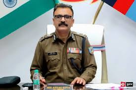
Shri Anurag Gupta
Director General of Police
Jharkhand Police
Shri Anurag Gupta, a 1990-batch Indian Police Service (IPS) officer, currently serves as the Director General of Police (DGP) for Jharkhand. Throughout his career, he has held several key positions, including Director General of the Criminal Investigation Department (CID) and head of the Anti-Corruption Bureau (ACB) in Jharkhand. In July 2024, he was appointed as the officiating DGP, and by February 2025, he was confirmed as the regular DGP of the state. His tenure has been marked by both commendations and controversies. Notably, during the 2019 Lok Sabha elections, he was relieved from his duties as Additional Director General (Special Branch) following allegations of biased conduct. Despite such challenges, Shri Gupta has been recognized for his commitment to law enforcement and his efforts in enhancing the state's policing infrastructure. His leadership continues to shape the strategic direction of Jharkhand's police force.
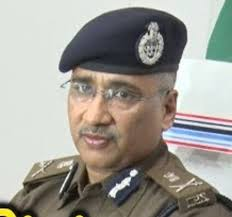
Shri Kundan Krishnan
Additional Director General of Police (Headquarters)
Bihar Police
Shri Kundan Krishnan is a 1994-batch Indian Police Service (IPS) officer of the Bihar cadre. In December 2024, after returning from central deputation, he was appointed as the Additional Director General of Police (Headquarters) in Bihar. His extensive career includes significant roles such as serving in the Central Industrial Security Force (CISF) as an Additional Director General. Upon his repatriation to the Bihar cadre, he was entrusted with overseeing the police headquarters, reflecting the state government's confidence in his leadership and administrative capabilities. In addition to his role as ADG (Headquarters), Shri Krishnan has been assigned the additional responsibility of heading the Special Task Force (STF), focusing on organized crime and counter-terrorism operations. His diverse experience at both state and central levels underscores his commitment to maintaining law and order and addressing complex security challenges.
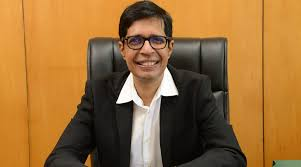
Dr. Kamakoti Veezhinathan
Director
Indian Institute of Technology Madras
Dr. Kamakoti Veezhinathan is the Director of the Indian Institute of Technology (IIT) Madras, having assumed the role in January 2022. He joined the institute's faculty in 2001 after earning his M.S. and Ph.D. degrees in Computer Science and Engineering from IIT Madras. Dr. Veezhinathan specializes in Computer Architecture, Information Security, and VLSI Design. He leads the Microprocessor Development Program and the Information Security Education and Awareness Program at the institute, both funded by the Ministry of Electronics and Information Technology, Government of India. Additionally, he serves on the National Security Advisory Board and has chaired the Artificial Intelligence Task Force constituted by the Ministry of Commerce and Industry. Throughout his tenure at IIT Madras, Dr. Veezhinathan has held various administrative positions, including Chairman of the Joint Entrance Examination (JEE) and Associate Dean of Industrial Consultancy and Sponsored Research. His extensive research contributions include over 150 publications in international journals and conferences.
Mr. Justin Bassi
Executive Director
Australian Strategic Policy Institute
Mr. Justin Bassi is the Executive Director of the Australian Strategic Policy Institute (ASPI). With a background in national security and intelligence, he leads ASPI's efforts in providing independent, policy-relevant research and analysis to inform Australia's strategic and defense policy choices.